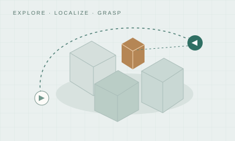
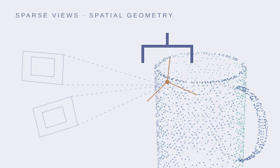

Language-guided grasping
in clutter
APeG combines active viewpoint exploration and a grasp selection policy to find and grasp language-specified objects in heavily cluttered scenes.
Read paperTsinghua University
Understanding the world.
Enabling robots to act.
I am Yixiang Dai at Tsinghua University. My research spans 3D vision, computational imaging, and robotic manipulation. I am interested in how robots perceive complex scenes and use that understanding to interact with the physical world.

A closer look
Three first-author works exploring
perception, geometry, and interaction.

APeG combines active viewpoint exploration and a grasp selection policy to find and grasp language-specified objects in heavily cluttered scenes.
Read paper
A multi-view framework exploring visual geometry for six-degree-of-freedom grasping with sparse RGB observations.
Read paper
Uncertainty-aware refinement and nonlocal attention help recover continuous laser stripes from noisy images for welding robots.
Read paperIllustrations above are conceptual sketches.
Research archive
First-author work first; papers in each group are ordered by citation count.
12 publications
First-author work
Try a different title, author, venue, or year.
Citation counts reflect the supplied Google Scholar snapshot, November 2026. View current counts
Get in touch
For research conversations and collaboration,
you can reach me by email.